Что такое ПАВы (простым языком)?
ПАВы (поверхностно-активные вещества) — это компоненты, которые отвечают за очищение кожи. Именно они помогают гелям для умывания, пенкам и шампуням удалять загрязнения, кожное сало и остатки макияжа.
Их ключевая особенность — способность одновременно взаимодействовать с водой и жиром. Благодаря этому ПАВы растворяют загрязнения и легко смываются вместе с ними, оставляя кожу чистой.
Но важно понимать: не все ПАВы одинаковы. Одни работают мягко и не нарушают баланс кожи, а другие могут действовать слишком агрессивно, особенно если кожа склонна к сухости, обезвоженности или повышенной чувствительности.
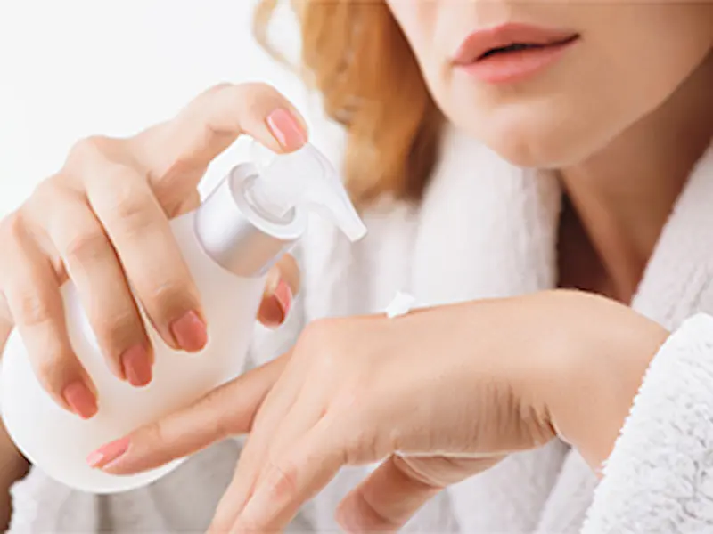
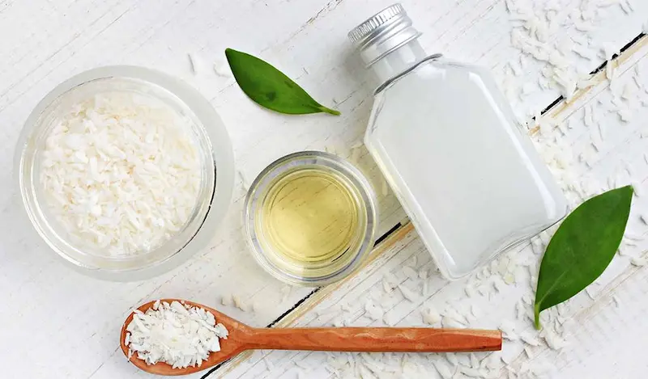
Почему ПАВы могут вредить коже?
Некоторые ПАВы очищают кожу слишком интенсивно. Вместе с загрязнениями они удаляют и естественные липиды, которые отвечают за защиту и удержание влаги в коже.
В результате нарушается кожный барьер: кожа начинает быстрее терять влагу, становится сухой, обезвоженной и более чувствительной. Появляется ощущение стянутости, тусклый цвет лица, шелушение и повышенная реактивность.
При регулярном использовании агрессивных очищающих средств кожа может хуже восстанавливаться и сильнее реагировать на внешние факторы — холодный воздух, жёсткую воду, ветер и перепады температур. Это особенно заметно в холодный сезон и при сухом воздухе в помещениях.
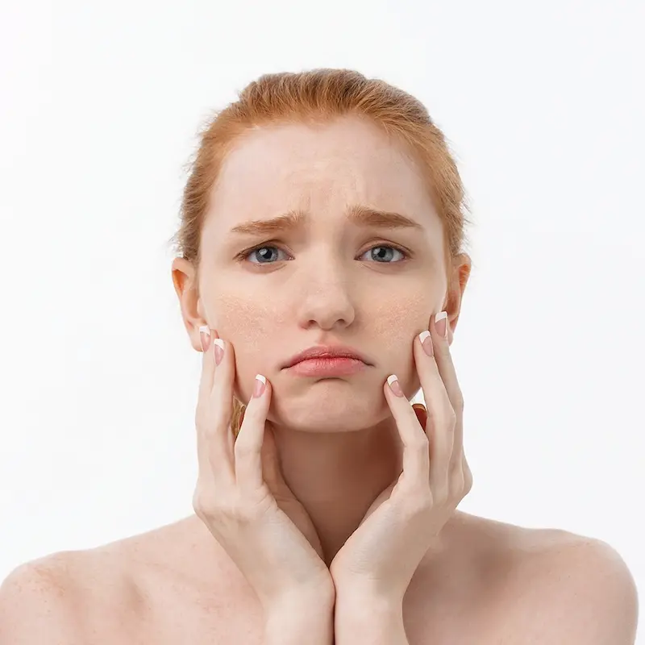
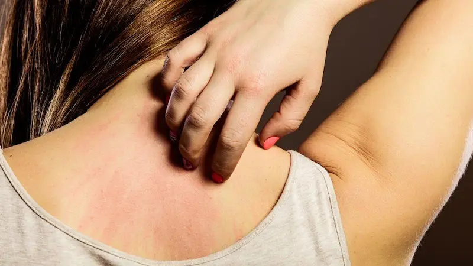
Агрессивные ПАВы: SLS и SLES
Наиболее распространённые агрессивные ПАВы — Sodium Lauryl Sulfate (SLS) и Sodium Laureth Sulfate (SLES). Они часто используются в очищающих средствах благодаря своей способности создавать густую пену и эффективно удалять загрязнения.
Однако их высокая очищающая способность может работать против кожи. Эти компоненты способны разрушать липидный барьер, что приводит к потере влаги и снижению защитных функций кожи.
При регулярном использовании средства с такими ПАВ могут вызывать сухость, ощущение стянутости, тусклый цвет лица и повышенную чувствительность. Поэтому для ежедневного ухода лучше выбирать более мягкие очищающие компоненты, особенно если кожа склонна к сухости и реактивности.
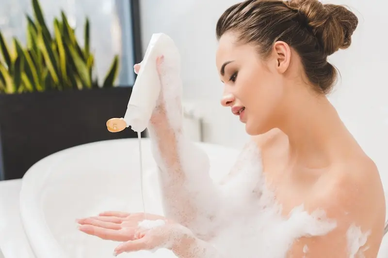
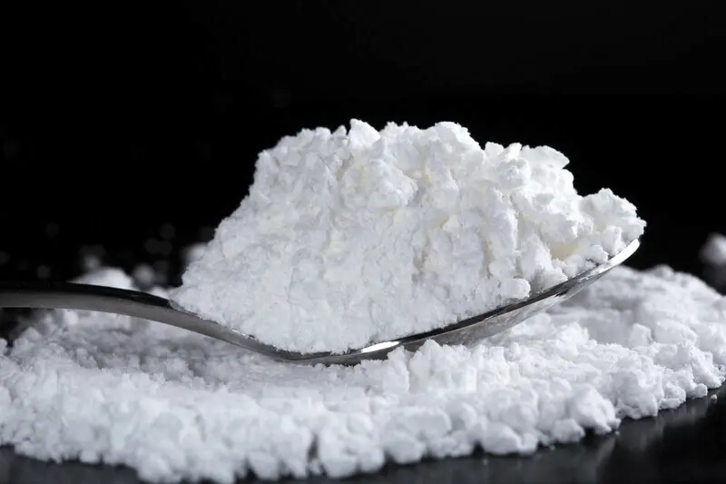
Мягкие ПАВы: какие безопасны для кожи?
В отличие от агрессивных очищающих компонентов, мягкие ПАВы действуют деликатно: они очищают кожу, не разрушая её защитный барьер и не вызывая выраженной сухости. Такие компоненты подходят для ежедневного ухода, особенно если кожа склонна к обезвоженности, чувствительности или раздражению.
Мягкие ПАВы работают менее интенсивно, но более физиологично — они удаляют загрязнения, сохраняя липидный слой кожи. Благодаря этому после умывания не возникает ощущения стянутости, а кожа остаётся более увлажнённой и комфортной.
К наиболее распространённым мягким ПАВ относятся: Coco-Glucoside, Decyl Glucoside, Lauryl Glucoside, Disodium Cocoyl Glutamate и Sodium Cocoyl Isethionate. Эти компоненты часто используются в средствах для чувствительной кожи и мягком очищении.
При выборе очищающего средства стоит обращать внимание не только на отсутствие агрессивных ПАВ, но и на общий состав: наличие увлажняющих компонентов (глицерин, пантенол) и липидов помогает дополнительно поддерживать кожный барьер и снижать риск сухости.
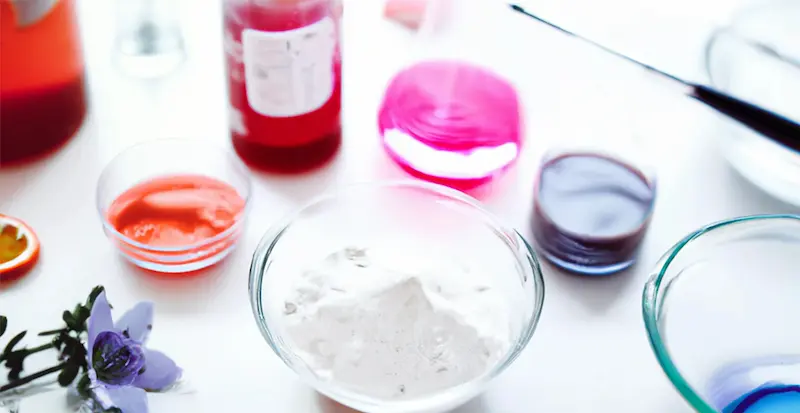
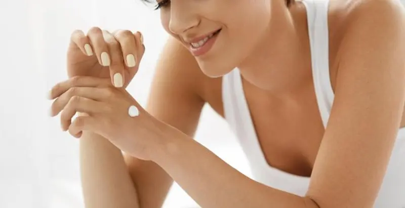
Как выбрать средство для умывания: чек-лист
Правильно подобранное очищающее средство — это основа здоровой кожи. Ошибки на этапе умывания часто приводят к сухости, стянутости и нарушению кожного барьера. Используйте этот чек-лист, чтобы выбрать средство, которое действительно подходит вашей коже.
1. Избегайте агрессивных ПАВ
Проверяйте состав: если в начале списка есть
SLS (Sodium Lauryl Sulfate) или
SLES (Sodium Laureth Sulfate), средство может
пересушивать кожу и усиливать чувствительность.
2. Выбирайте мягкие очищающие компоненты
Ищите в составе такие ПАВы, как
Coco-Glucoside,
Decyl Glucoside,
Sodium Cocoyl Isethionate — они очищают
деликатно и не повреждают защитный барьер.
3. Обращайте внимание на ощущение после умывания
Если кожа становится стянутой, сухой или «скрипит» — это сигнал,
что средство слишком агрессивное и нарушает баланс кожи.
4. Ищите увлажняющие и успокаивающие компоненты
Хорошо, если в составе есть
глицерин, пантенол,
ниацинамид — они помогают сохранить влагу и
снизить раздражение.
5. Учитывайте тип и состояние кожи
Сухой и чувствительной коже подходят кремовые или гелевые
текстуры без агрессивной пены. Для комбинированной кожи важно
сохранить баланс, не пересушивая отдельные зоны.
6. Не ориентируйтесь только на «ощущение чистоты»
Сильное обезжиривание — не показатель хорошего очищения.
Напротив, это может привести к обезвоженности и тусклому цвету
лица.
7. Учитывайте климат и сезон
В условиях сухого воздуха и холодной погоды кожа требует более
мягкого очищения. В такие периоды особенно важно избегать
агрессивных средств.
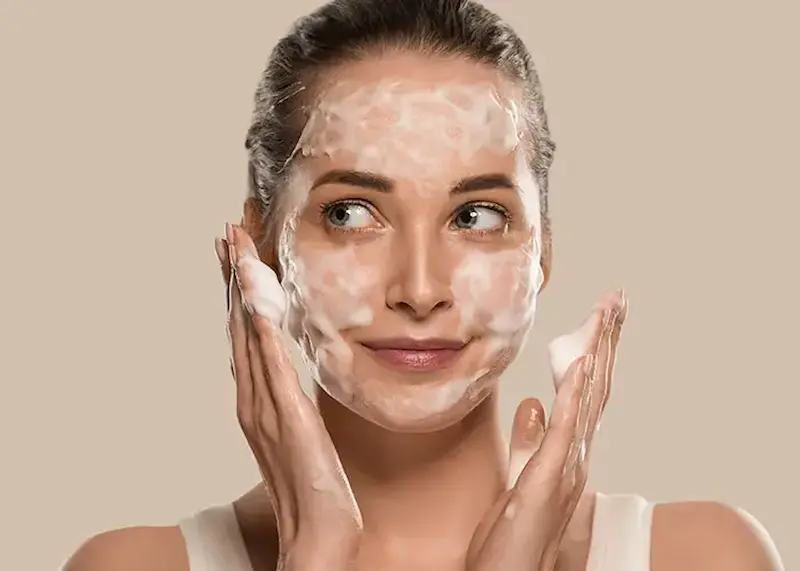
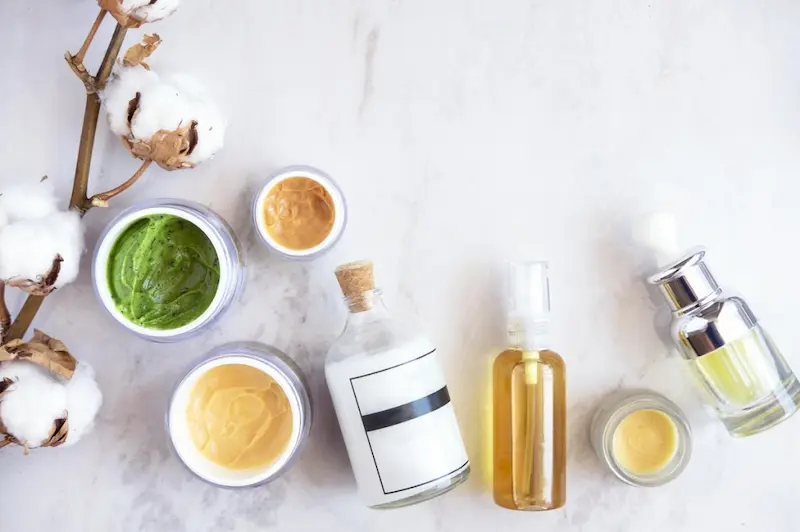
Частые ошибки при умывании
Даже качественное средство для умывания может не дать желаемого эффекта, если использовать его неправильно. Многие привычки в очищении кожи незаметно нарушают защитный барьер и приводят к сухости, раздражению и тусклому цвету лица.
Использование слишком агрессивных средств
Частая ошибка — выбор средств с сильными очищающими
компонентами, которые буквально «до скрипа» очищают кожу. Это
разрушает липидный барьер и усиливает обезвоженность.
Умывание слишком горячей водой
Горячая вода дополнительно растворяет защитные липиды, делая
кожу более сухой и чувствительной. Оптимально использовать
тёплую, комфортную воду.
Чрезмерное очищение
Умывание 3–4 раза в день или использование нескольких очищающих
средств подряд может привести к нарушению баланса кожи и
повышенной реактивности.
Игнорирование ощущений после умывания
Если после очищения появляется стянутость, сухость или жжение —
это сигнал, что средство не подходит и повреждает кожный барьер.
Отсутствие увлажнения после очищения
Даже мягкие ПАВы могут немного снижать уровень влаги, поэтому
важно сразу после умывания наносить крем или сыворотку, чтобы
поддержать баланс кожи.
Слишком интенсивное трение кожи
Активное растирание полотенцем или частое использование скрабов
может усиливать раздражение и повышать чувствительность кожи.
Неправильный выбор средства по типу кожи
Использование гелей для жирной кожи при склонности к сухости или
обезвоженности часто приводит к ухудшению состояния кожи и
нарушению барьера.
Топ мягких средств для умывания
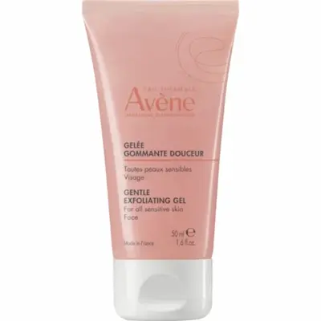
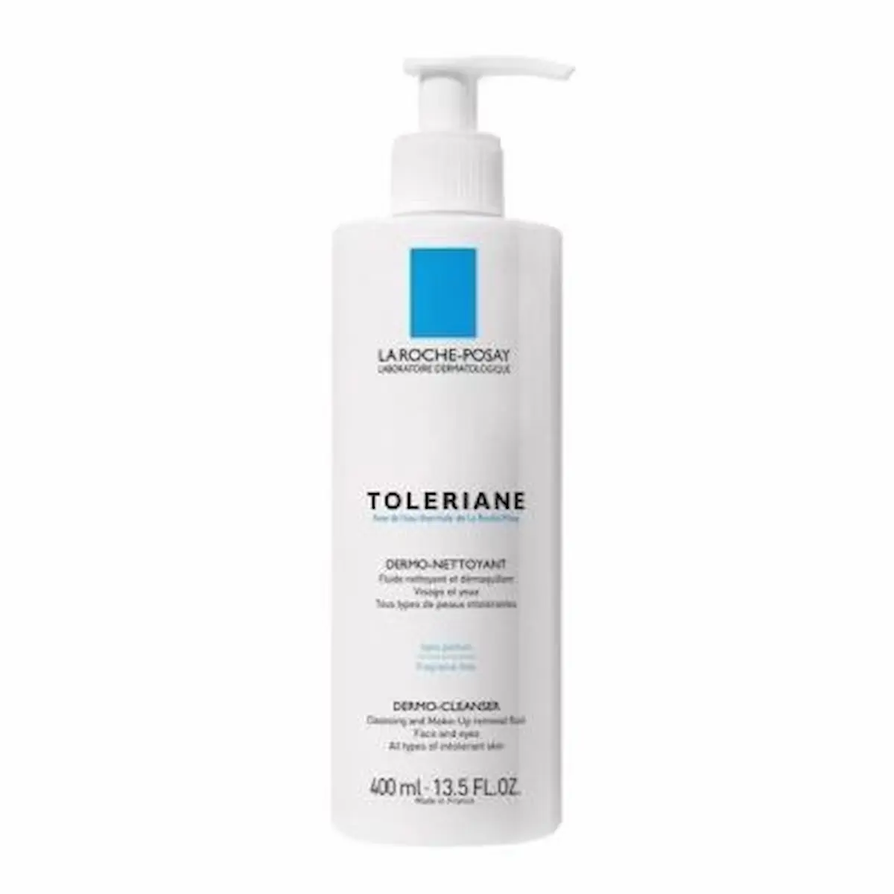
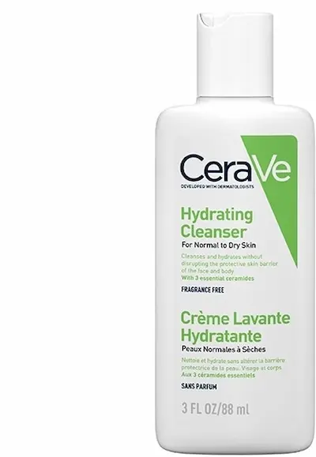
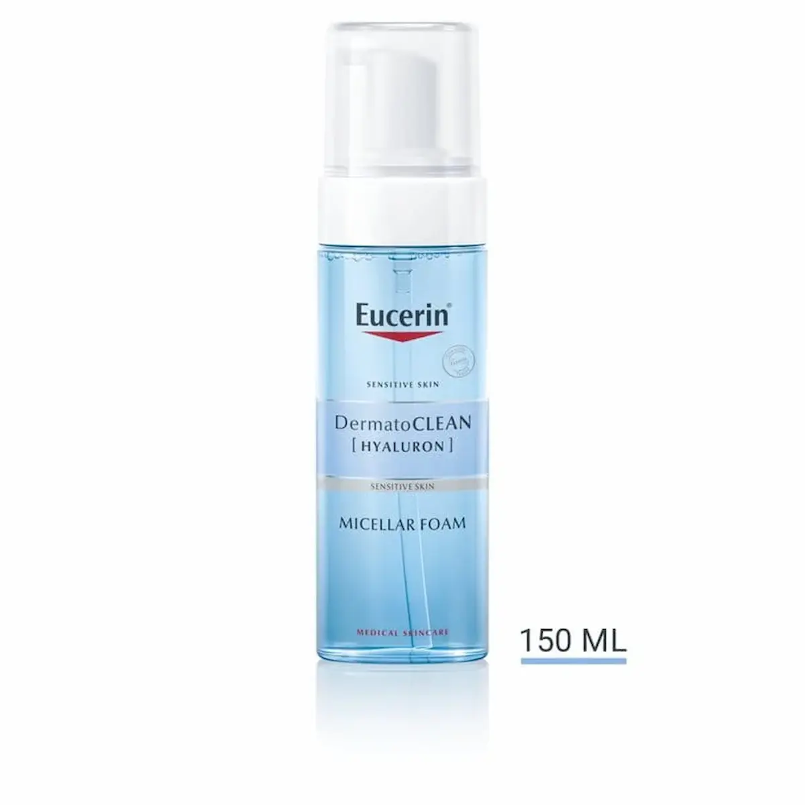
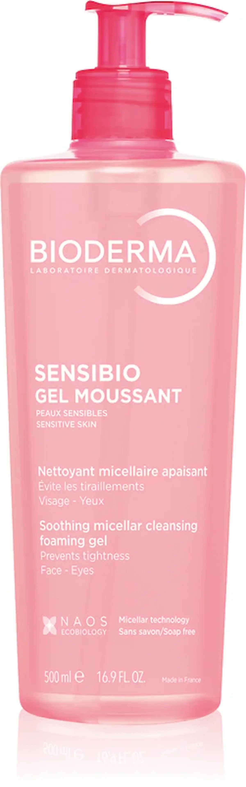
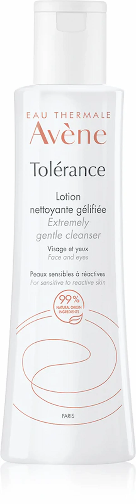
Часто задаваемые вопросы о ПАВ и очищении кожи
Что такое ПАВы простыми словами?
ПАВы (поверхностно-активные вещества) — это компоненты, которые помогают очищать кожу. Они растворяют жир, загрязнения и остатки косметики, позволяя легко смыть их водой.
Почему ПАВы могут сушить кожу?
Некоторые ПАВы не только очищают, но и смывают естественные липиды кожи. Это может нарушать защитный барьер, вызывать ощущение стянутости, сухость и повышенную чувствительность.
Какие ПАВы считаются агрессивными?
К агрессивным ПАВам относятся, например, SLS (Sodium Lauryl Sulfate) и SLES (Sodium Laureth Sulfate). Они хорошо очищают, но могут пересушивать кожу и усиливать раздражение, особенно при частом использовании.
Есть ли безопасные и мягкие ПАВы?
Да, существуют мягкие ПАВы, такие как кокоглюкозид, децилглюкозид, бетаины. Они очищают кожу более деликатно, не разрушая защитный барьер и подходят для чувствительной и обезвоженной кожи.
Как понять, что средство слишком агрессивное?
Если после умывания появляется ощущение стянутости, сухости, покраснение или кожа становится более реактивной — это может быть признаком слишком агрессивного очищения.
Можно ли использовать средства с SLS/SLES каждый день?
Для жирной кожи иногда допустимо, но для сухой, чувствительной и обезвоженной кожи ежедневное использование таких средств не рекомендуется. Лучше выбирать более мягкие формулы.
Как правильно выбрать средство для умывания?
Обращайте внимание на состав: избегайте агрессивных ПАВов, выбирайте мягкие очищающие компоненты, а также средства с увлажняющими и восстанавливающими ингредиентами — глицерином, церамидами, пантенолом.
Влияет ли климат Молдовы на реакцию кожи на ПАВы?
Да, в холодное время года сухой воздух и ветер усиливают потерю влаги, поэтому кожа становится более чувствительной к очищению. Летом жара и солнце также могут усиливать обезвоживание, поэтому важно выбирать мягкие средства круглый год.